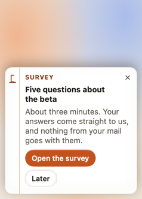
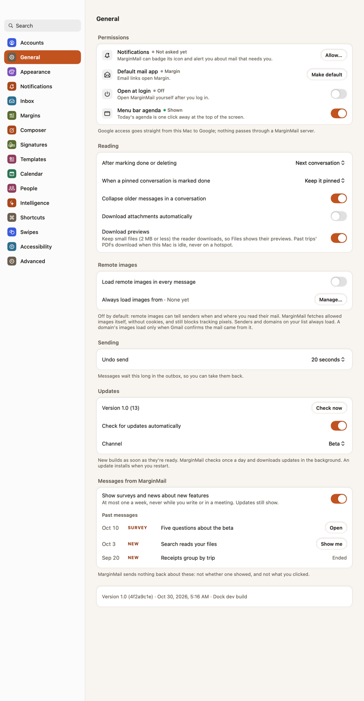

In a week I’ll ask how it’s going. Be blunt.
Release notes
MarginMail 1.0 (4)
Tue, Nov 3 · Beta
Now and then, MarginMail can show a short message in the sidebar: a survey, or a note about something new. At most one a week, never while you write or in a meeting.




Also in this build
- Turn them off in Settings › General, where past messages stay too.
- MarginMail sends nothing back about them: not whether one showed, and not what you clicked.